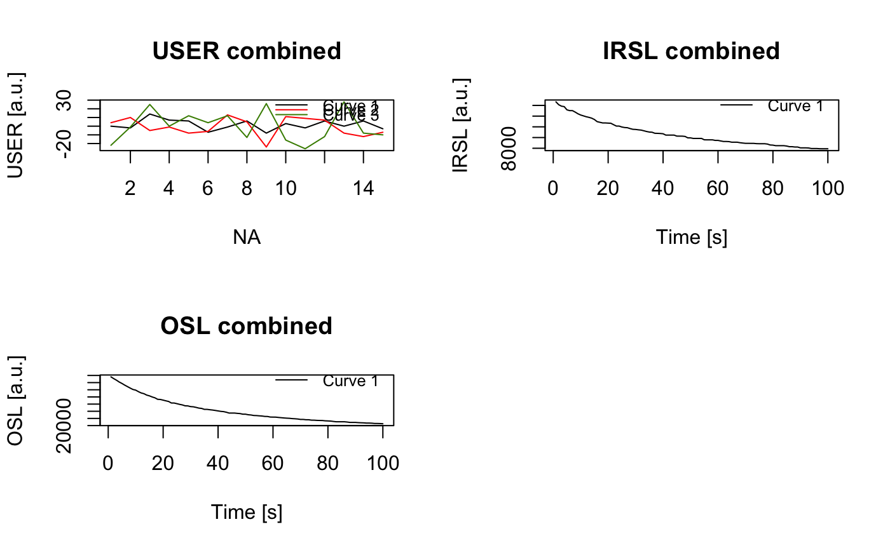

Imports PSL files produced by a SUERC portable OSL reader into R.
Usage
read_PSL2R(
file,
drop_bg = FALSE,
as_decay_curve = TRUE,
smooth = FALSE,
merge = FALSE,
...
)Arguments
- file
character (required): path and file name of the PSL file. If input is a
vectorit should comprise onlycharacters representing valid paths and PSL file names. Alternatively the input character can be just a directory (path). In this case the the function tries to detect and import all PSL files found in the directory.- drop_bg
logical (with default):
TRUEto automatically remove all non-OSL/IRSL curves.- as_decay_curve
logical (with default): Portable OSL Reader curves are often given as cumulative light sum curves. Use
TRUE(default) to convert the curves to the more usual decay form.- smooth
logical (with default):
TRUEto apply Tukey's Running Median Smoothing for OSL and IRSL decay curves. Smoothing is encouraged if you see random signal drops within the decay curves related to hardware errors.- merge
logical (with default):
TRUEto merge allRLum.Analysisobjects. Only applicable if multiple files are imported.- ...
currently not used.
Value
Returns an S4 RLum.Analysis object containing RLum.Data.Curve objects for each curve.
Details
This function provides an import routine for the SUERC portable OSL Reader PSL format (measurement data and sequence). PSL files are just plain text and can be viewed with any text editor. Due to the formatting of PSL files this import function relies heavily on regular expression to find and extract all relevant information. See note.
Note
Because this function relies heavily on regular expressions to parse
PSL files it is currently only in beta status. If the routine fails to import
a specific PSL file please report to <christoph.burow@gmx.net> so the
function can be updated.
Author
Christoph Burow, University of Cologne (Germany), Sebastian Kreutzer, Institut of Geography, Heidelberg University (Germany) , RLum Developer Team
How to cite
Burow, C., Kreutzer, S., 2024. read_PSL2R(): Import PSL files to R. Function version 0.1.1. In: Kreutzer, S., Burow, C., Dietze, M., Fuchs, M.C., Schmidt, C., Fischer, M., Friedrich, J., Mercier, N., Philippe, A., Riedesel, S., Autzen, M., Mittelstrass, D., Gray, H.J., Galharret, J., Colombo, M., 2024. Luminescence: Comprehensive Luminescence Dating Data Analysis. R package version 0.9.25. https://r-lum.github.io/Luminescence/
Examples
# (1) Import PSL file to R
file <- system.file("extdata", "DorNie_0016.psl", package = "Luminescence")
psl <- read_PSL2R(file, drop_bg = FALSE, as_decay_curve = TRUE, smooth = TRUE, merge = FALSE)
print(str(psl, max.level = 3))
#> Formal class 'RLum.Analysis' [package "Luminescence"] with 6 slots
#> ..@ protocol : chr "portable OSL"
#> ..@ records :List of 5
#> .. ..$ :Formal class 'RLum.Data.Curve' [package "Luminescence"] with 7 slots
#> .. ..$ :Formal class 'RLum.Data.Curve' [package "Luminescence"] with 7 slots
#> .. ..$ :Formal class 'RLum.Data.Curve' [package "Luminescence"] with 7 slots
#> .. ..$ :Formal class 'RLum.Data.Curve' [package "Luminescence"] with 7 slots
#> .. ..$ :Formal class 'RLum.Data.Curve' [package "Luminescence"] with 7 slots
#> ..@ originator: chr "read_PSL2R"
#> ..@ info :List of 15
#> .. ..$ Run_Name : chr "ALU"
#> .. ..$ Sample_no : chr "0016"
#> .. ..$ Sequence_Name : chr "Praktikum2016"
#> .. ..$ Filename : chr "Praktikum2016"
#> .. ..$ Dark_Count : chr "15 c/s"
#> .. ..$ Light_Count : chr "0 c/s"
#> .. ..$ Dark_Count_Correction: chr "OFF"
#> .. ..$ Offset_Subtract : chr "ON"
#> .. ..$ Datafile_Path : chr "D:\\Results\\DORNIE\\ALU\\ALU0016.psl"
#> .. ..$ Summary_Path : chr "D:\\Results\\DORNIE\\ALU\\summary\\ALU.sum"
#> .. ..$ Run_Sequence : chr "Praktikum2016"
#> .. ..$ Date : Date[1:1], format: "2016-05-19"
#> .. ..$ Time : chr "4:45:12"
#> .. ..$ Sample : chr "L11"
#> .. ..$ Sequence :Classes ‘data.table’ and 'data.frame': 5 obs. of 5 variables:
#> .. .. ..- attr(*, ".internal.selfref")=<externalptr>
#> ..@ .uid : chr "2024-09-12-01:45.0.245435066055506"
#> ..@ .pid : chr NA
#> NULL
plot(psl, combine = TRUE)
